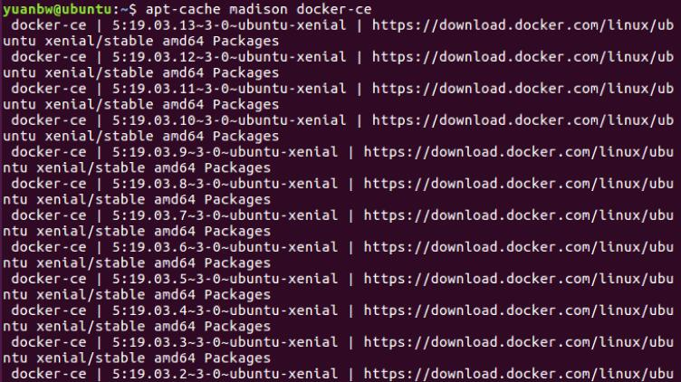
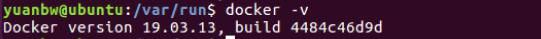
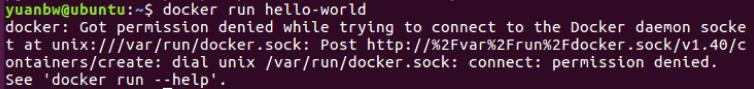
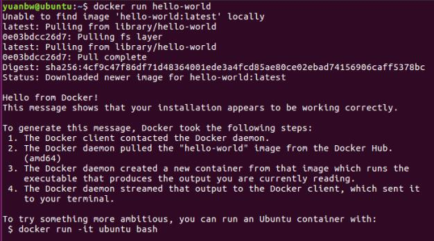

Docker的下载与安装
本文主要介绍docker的下载与安装
sudo apt-get remove docker docker-engine docker-ce docker.io docker-ce-clisudo apt-get updatesudo apt-get install -y apt-transport-https ca-certificates curl software-properties-commoncurl -fsSL https://download.docker.com/linux/ubuntu/gpg | sudo apt-key add -sudo add-apt-repository "deb [arch=amd64] https://download.docker.com/linux/ubuntu $(lsb_release -cs) stable"sudo apt-get updatesudo apt-get install -y docker-ceapt-cache madison docker-ce列出可用的版本

- 第二列：版本字符串
- 第三列：存储库名称
选择指定版本
sudo apt-get install docker-ce=<VERSION>查看docker版本
docker -v
则docker安装成功
docker run hello-world
提示以上错误，是因为docker安装后，Docker的守护进程(Docker daemon) 会监听 Unix域套接字/var/run/docker.sock，容器中的进程可以通过它与Docker daemon进行通信，但由于/var/run/docker.sock的用户组是docker，所以提示无权限，因此解决方法是将登录用户加入docker用户组或者直接使用sudo
若出现，则启动成功
